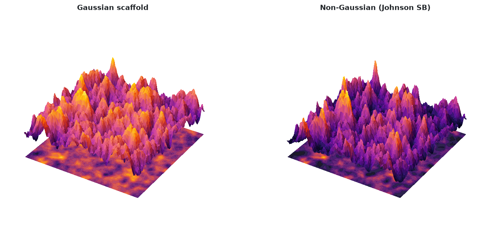
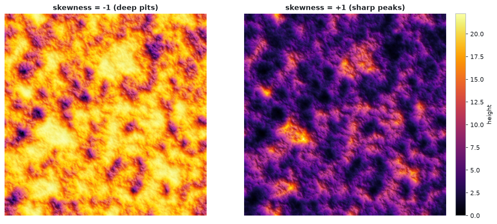

Guide
Concepts in 60 seconds
Generation has three steps:
- Spatial scaffold. A Gaussian surface with autocorrelation \(R=\text{rms}^2\exp[-(\sqrt{(t_x/\xi_x)^2+(t_y/\xi_y)^2})^{2\alpha}]\) is built by filtering white noise in Fourier space (the power spectrum, i.e. energy per spatial frequency, is the Fourier transform of \(R\)). It fixes where hills and valleys are. \(\xi_x,\xi_y\) are correlation lengths in pixels (x along columns, y along rows), \(\alpha\) is the roughness exponent.
- Height distribution. A Johnson distribution (a Gaussian variable pushed through a
sinh, logistic, exponential or linear map; typesSU,SB,SL,SN) is fitted to the requested (rms, skewness, kurtosis). The family follows from the numbers, you cannot choose it. Kurtosis can never be below \(1+\text{skewness}^2\); on that boundary the two-point typeSTappears. - Rank mapping. The pixel with the k-th lowest scaffold height receives the k-th lowest Johnson sample. The surface is then shifted to min = 0, so the mean is not a parameter.
Generating surfaces
from nongauss import generate_surface, print_report, plots
res = generate_surface(N=256, rms=3, skewness=1, kurtosis=4,
corlength_x=12, corlength_y=12, alpha=0.8, seed=7)
| Parameter | Default | Meaning |
|---|---|---|
N |
500 | grid size, surface is N x N pixels |
rms |
3.0 | target root-mean-square roughness |
skewness |
1.0 | target skewness |
kurtosis |
3.0 | target Pearson kurtosis (Gaussian = 3) |
corlength_x, corlength_y |
10 | correlation lengths in pixels |
alpha |
0.9 | roughness exponent; small is jagged, near 1 is smooth |
non_Gauss |
True |
False returns only the Gaussian surface |
invert |
False |
flip sign before the shift to min = 0 (also flips skewness) |
clip_percentiles |
None |
(low, high) clip of the noise; bounds heights, biases kurtosis down |
seed |
None |
seed for reproducibility |
It returns a SurfaceResult:
| Field | Content |
|---|---|
z |
final surface, (N, N) array, min = 0 |
z_gauss |
the Gaussian scaffold |
j_type |
'SN', 'SL', 'SB', 'SU', 'ST' or 'Gaussian' |
coef |
Johnson parameters (gamma, delta, xi, lam) |
msg |
fit warning, empty if none |
requested |
dict of the parameters you asked for |
Related functions: gaussian_surface(N, rms, corlength_x, corlength_y, alpha, rng) returns only the scaffold; rank_map(z_spatial, values) applies the rank mapping to any two arrays. The legacy SAimage_fft_2(...) still returns the height array.
Check feasibility first
kurtosis < 1 + skewness**2 is impossible and falls back to ST (a two-valued surface). plots.plot_feasibility([(skew, kurt)]) shows which family a request lands in.
Measuring surfaces
from nongauss import moments, hhcf_1d, abbott_curve, radial_psd, report_text
mean, std, skew, kurt = moments(res.z)
g = hhcf_1d(res.z, axis=1) # G(r) = sqrt(<(z(x+r)-z(x))^2>) along x (axis=0: y)
pct, h = abbott_curve(res.z) # bearing-area curve: % of area above height h
k, psd = radial_psd(res.z) # isotropic power spectrum, k in cycles/pixel
print(report_text(res)) # requested vs. achieved table (also print_report(res))
Plotting
Each plots.plot_* function takes a SurfaceResult and returns a figure. Pass interactive=True for a Plotly figure instead of a matplotlib one. Static figures have at most two panels and a white background.
| Function | Panels |
|---|---|
plot_surfaces(res) |
Gaussian scaffold, final surface (3D) |
plot_heightmap_mask(res, threshold=None) |
hillshaded heightmap, binarized mask |
plot_distribution(res) |
histogram with fitted Johnson PDF, Q-Q plot |
plot_profile_bearing(res) |
line profile, Abbott-Firestone curve |
plot_hhcf_report(res) |
height-height correlation along x and y, report table |
plot_spectrum(res) |
2D power spectrum, radial spectrum |
plot_feasibility(points_or_res) |
Johnson (skewness, kurtosis) plane |
plot_compare(res_a, res_b, labels) |
two heightmaps on a shared color scale |
fig = plots.plot_distribution(res) # matplotlib Figure
fig = plots.plot_distribution(res, interactive=True) # plotly Figure (needs plotly)
fig = plots.plot(res, "spectrum") # by name, see plots.KINDS
plots.save(fig, "out.png") # .png for matplotlib, .html for Plotly

Parameter sliders (interactive only; all surfaces share the seed so only one parameter changes):
from nongauss import interactive
interactive.explorer("skewness", (-1.5, -1, 0, 1, 1.5), N=96, kurtosis=4).show()
plot_compare is the quickest way to see what a parameter does:
neg = generate_surface(N=256, skewness=-1, kurtosis=4, seed=7)
pos = generate_surface(N=256, skewness=+1, kurtosis=4, seed=7)
plots.plot_compare(neg, pos, ["skewness = -1", "skewness = +1"])

Command line
nongauss [--N 256] [--rms 3] [--skew 1] [--kurt 3] [--clx 10] [--cly 10] [--alpha 0.9]
[--seed 0] [--out DIR] [--interactive]
| Option | Meaning |
|---|---|
--N, --rms, --skew, --kurt, --alpha, --seed |
same as the Python parameters |
--clx, --cly |
correlation lengths corlength_x, corlength_y |
--out DIR |
write one file per plot into DIR (PNG, or HTML with --interactive); without it figures are shown on screen |
--interactive |
Plotly figures instead of matplotlib |
python -m nongauss ... is equivalent. The report is printed to the terminal.
Notes and pitfalls
- Axes.
corlength_xacts along image columns (array axis 1),corlength_yalong rows (axis 0). Before v0.2 the roles were swapped. - Mean. The surface is shifted to min = 0. rms, skewness and kurtosis are shift-invariant and remain comparable to the request.
- Statistical accuracy. Achieved skewness and kurtosis converge as
Ngrows; for heavy tails (kurtosis above ~10) useN >= 512. - Exact vs. approximate. Rank mapping gives the exact height distribution but the correlation function of the result differs slightly from the scaffold's.
- Reproducibility. The same
seedand parameters give the same surface. - Memory. Cost is
O(N^2 log N);N = 2048takes about a second and ~0.5 GB.
Development
pip install -e ".[dev]"
python src/run_tests.py # all tests; extra arguments go to pytest, e.g. -k cli
python src/examples/make_readme_figures.py # regenerate figures in mkdocs/docs/assets/
mkdocs serve -f mkdocs/config.yml # preview this site
mkdocs build -f mkdocs/config.yml # static site in site/
Releasing: bump version in pyproject.toml and publish a GitHub release; the workflow runs the tests, uploads to PyPI and deploys these docs to GitHub Pages.